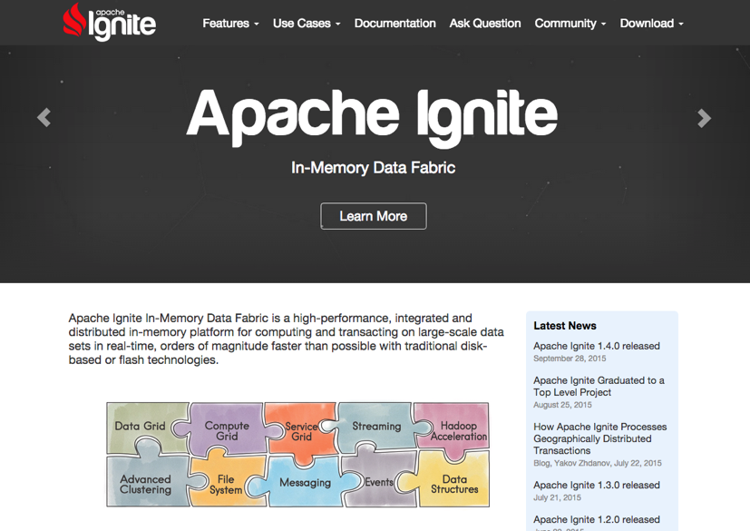

Apache Ignite In-Memory Data Fabric is a high-performance, integrated and distributed in-memory platform for computing and transacting on large-scale data sets in real-time, orders of magnitude faster than possible with traditional disk-based or flash technologies.

You can use Zeppelin to retrieve distributed data from cache using Ignite SQL interpreter. Moreover, Ignite interpreter allows you to execute any Scala code in cases when SQL doesn't fit to your requirements. For example, you can populate data into your caches or execute distributed computations.
In order to use Ignite interpreters, you may install Apache Ignite in some simple steps:
Download Ignite source release or binary release whatever you want. But you must download Ignite as the same version of Zeppelin's. If it is not, you can't use scala code on Zeppelin. You can find ignite version in Zepplin at the pom.xml which is placed under path/to/your-Zeppelin/ignite/pom.xml ( Of course, in Zeppelin source release ). Please check ignite.version .
Currently, Zeppelin provides ignite only in Zeppelin source release. So, if you download Zeppelin binary release( zeppelin-0.5.0-incubating-bin-spark-xxx-hadoop-xx ), you can not use ignite interpreter on Zeppelin. We are planning to include ignite in a future binary release.
Examples are shipped as a separate Maven project, so to start running you simply need to import provided
Then start org.apache.ignite.examples.ExampleNodeStartup (or whatever you want) to run at least one or more ignite node. When you run example code, you may notice that the number of node is increase one by one.
Tip. If you want to run Ignite examples on the cli not IDE, you can export executable Jar file from IDE. Then run it by using below command.
$ nohup java -jar </path/to/your Jar file name>
At the "Interpreters" menu, you may edit Ignite interpreter or create new one. Zeppelin provides these properties for Ignite.
| Property Name | value | Description |
|---|---|---|
| ignite.addresses | 127.0.0.1:47500..47509 | Coma separated list of Ignite cluster hosts. See Ignite Cluster Configuration section for more details. |
| ignite.clientMode | true | You can connect to the Ignite cluster as client or server node. See Ignite Clients vs. Servers section for details. Use true or false values in order to connect in client or server mode respectively. |
| ignite.config.url | Configuration URL. Overrides all other settings. | ignite.jdbc.url | jdbc:ignite:cfg://default-ignite-jdbc.xml | Ignite JDBC connection URL. |
| ignite.peerClassLoadingEnabled | true | Enables peer-class-loading. See Zero Deployment section for details. Use true or false values in order to enable or disable P2P class loading respectively. |
After configuring Ignite interpreter, create your own notebook. Then you can bind interpreters like below image.
For more interpreter binding information see here.
In order to execute SQL query, use %ignite.ignitesql prefix.
Supposing you are running org.apache.ignite.examples.streaming.wordcount.StreamWords, then you can use "words" cache( Of course you have to specify this cache name to the Ignite interpreter setting section ignite.jdbc.url of Zeppelin ).
For example, you can select top 10 words in the words cache using the following query
%ignite.ignitesql
select _val, count(_val) as cnt from String group by _val order by cnt desc limit 10
As long as your Ignite version and Zeppelin Ignite version is same, you can also use scala code. Please check the Zeppelin Ignite version before you download your own Ignite.
%ignite
import org.apache.ignite._
import org.apache.ignite.cache.affinity._
import org.apache.ignite.cache.query._
import org.apache.ignite.configuration._
import scala.collection.JavaConversions._
val cache: IgniteCache[AffinityUuid, String] = ignite.cache("words")
val qry = new SqlFieldsQuery("select avg(cnt), min(cnt), max(cnt) from (select count(_val) as cnt from String group by _val)", true)
val res = cache.query(qry).getAll()
collectionAsScalaIterable(res).foreach(println _)
Apache Ignite also provides a guide docs for Zeppelin "Ignite with Apache Zeppelin"